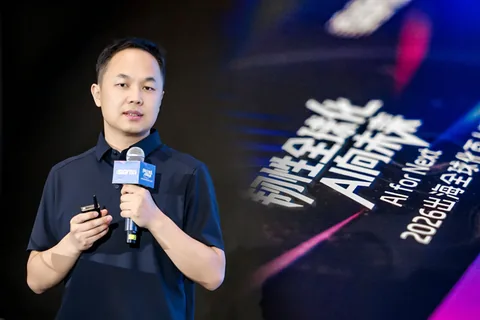
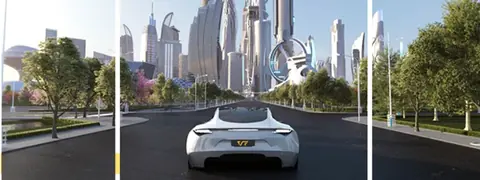
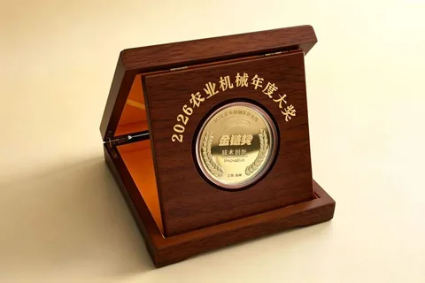
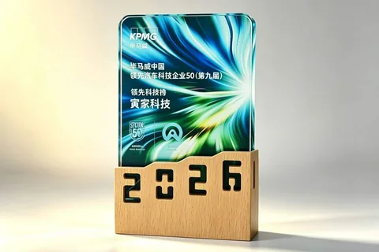
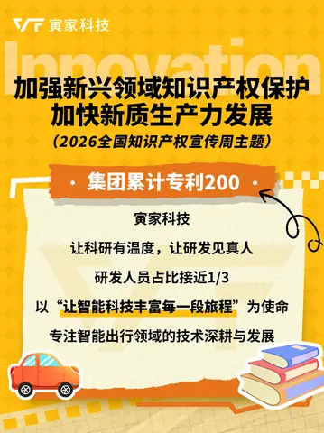
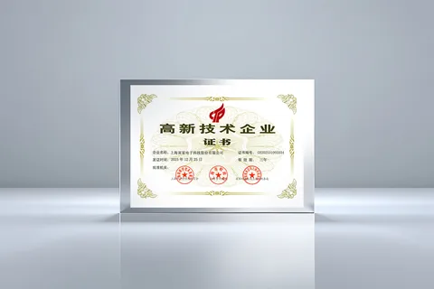

052026
十五五領航，寅家科技以自研技術，赴時代之約
正值“十五五”規劃佈局之際，我們迎來了第二十六屆全國科技活動周（5月24日至31日）。本屆活動以“奮進‘十五五’科技譜新篇”為主題，旨在推動前沿技術走出實驗室，…
News Center

正值“十五五”規劃佈局之際，我們迎來了第二十六屆全國科技活動周（5月24日至31日）。本屆活動以“奮進‘十五五’科技譜新篇”為主題，旨在推動前沿技術走出實驗室，…

在寅家 我們因為熱愛相聚 因為共同的目標，彼此相惜 我們朝夕相伴、共赴長遠 520，讓我們道出一句 “有你同行，真好”…

2026年6月1日，公安部發布的《機動車駕駛人疲勞駕駛認定規則》（GA/T2372-2026（以下簡稱“新規”）將在全國統一實施，新規對駕駛員疲勞狀態的認定標準…

2026年北京國際車展期間，新格局下的汽車零部件企業出海論壇暨2026「弗戈出海先鋒獎」頒獎典禮在北京國際展覽中心圓滿舉辦。 《汽車製造業》主編龔淑娟女士致辭…

2026全國知識產權宣傳週，為原創打call！ 4月26日是世界知識產權日，4月20日-26日是2026全國知識產權宣傳週。…

上海寅家電子科技股份有限公司（以下簡稱“寅家科技”）正式通過高新技術企業複審，再次榮獲由上海市科學技術委員會、上海市財政局、國家稅務總局上海市稅務局聯合頒發…